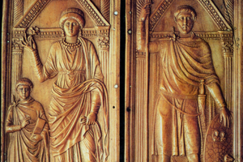
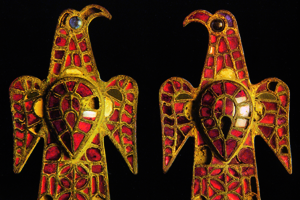
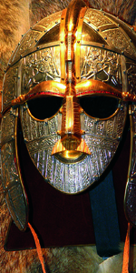
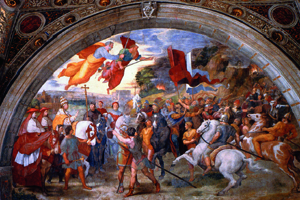
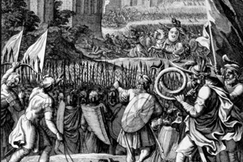

Lezione 5  Invasioni barbariche
Invasioni barbariche

-
140
260
-
130
230
-
200
470
-
205
310
-
80
150
-
190
280
-
250
320
-
150
200
MAGONZA
406: Un gruppo di vandali, alani e suebi attraversa il limes fortificato all’altezza di Magonza, approfittando del Reno ghiacciato nella stagione invernale.
DITTICO DI STILICONE
Testimone e protagonista del cruciale processo di dissoluzione dell’Iimpero, il germanico Stilicone fu il primo barbaro (e per di più di religione ariana) ad occupare una posizione di assoluto rilievo: fu infatti console e magister militum nel momento in cui l’Impero si scisse nelle due parti d’Occidente e di Oriente. Fu una sua debolezza strategica che permise nel 406 l’attraversamento del Reno da parte dei popoli del nord, preparando la via al Sacco di Roma del 410. Questo dittico in avorio del 400 circa lo raffigura insieme alla moglie Serena e al figlio Eucherio.
FIBULE VISIGOTICHE
Grande semplicità ed evidenza plastica, preziosità e sfarzo dei materiali: queste fibule in bronzo, oro, smalto e pietre dure testimoniano la ricchezza e lo splendore della civiltà artistica visigotica.RAVENNA
406: Onorio, l’imperatore d’Occidente, sposta la capitale a Ravenna.
SUTTON HOO
In battaglia i condottieri sassoni dovevano indossare elmi simili a questo, ricostruito a partire dai ritrovamenti nella sepoltura di Sutton Hoo, risalenti al VI secolo.
RONCOFERRARO
Non sono ancora del tutto chiare le ragioni per cui Attila, il più potente imperatore barbaro, nella sua avanzata verso Roma del 452 si arrestò sul Po dopo l’incontro con un’ambasciata di cui faceva parte papa Leone I;la tradizione e l’iconografia dei secoli successivi, come testimonia anche il celeberrimo affresco di Raffaello nelle Stanze Vaticane, interpretano l’episodio come un trionfo della religione cattolica.
SACCO DI ROMA
Il sacco di Roma del 410, con l’entrata del comandante visigoto Alarico, fu soltanto la tappa conclusiva di un lungo processo di indebolimento e dissoluzione dell’Impero; è difficile tuttavia sottovalutarne la portata simbolica, ben sottolineata da questa incisione del 1654 di François Chauveau.
455: Secondo sacco di Roma per mano dei vandali.CAMPI CATALAUNI
451: Il generale romano Ezio riesce a fermare l’avanzata degli unni, guidati da Attila, in Francia (Champagne), nella battaglia dei Campi Catalauni.